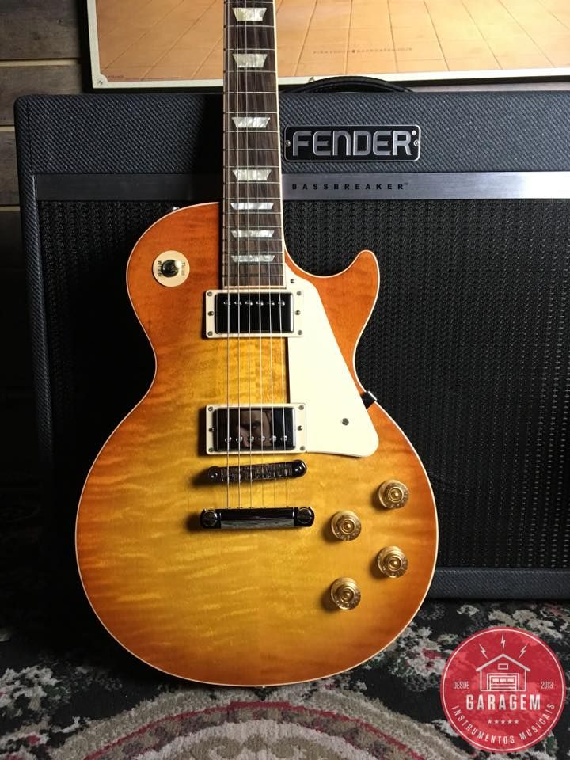

Anti UX
Guitar:

THE GUITAR IS A FRETTED STRINGED INSTRUMENT THAT WAS INVENTED IN THE FIFTEENTH CENTURY. SOUND IS PRODUCED BY PLUCKING AS STRING. THIS PRODUCES A SOUND WAVE THAT VIBRATES THE WOODEN BODY OF THE GUITAR. THE WOODEN BODY HELPS VIBRATE THE AIR AROUND THE GUITAR TO PRODUCE SOUND WAVES THAT WE CAN HEAR. IN THE 1920S, THE PICKUP WAS INVENTED. THIS TURNED THE STRING VIBRATIONS INTO ELECTROMAGNETIC WAVES THAT COULD TRAVEL THROUGH CABLES AND PRODUCE SOUND THROUGH AMPLIFIERS. THIS INVENTION LEAD TO THE MODERN ELECTRIC GUITAR. NOW, THERE ARE MANY COMPETING GUITAR COMPANIES, LIKE GIBSON, RICKENBACKER, FENDER, AND PRS.